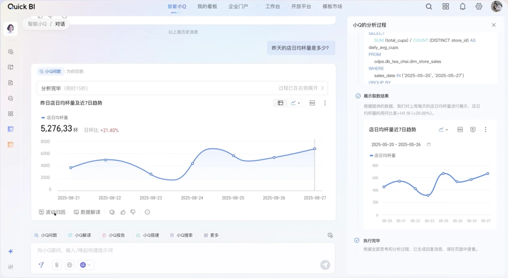

智能化阶段的管理驾驶舱
2024-2025 年 智能问数/ChatBI 产品密集发布：阿里云 Quick BI、腾讯云 ChatBI、火山引擎 Data Agent、百度 Sugar BI、华为 DataArts Insight，等等。
| 维度 | 数字化时代 | 智能化时代 |
|---|---|---|
| 交互方式 | 人找数：固定看板 + 手动钻取 | 对话问数 自然语言直达数据，管理者开口即得 |
| 告警机制 | 人工设阈值，超限才报，误报漏报难免 | 异常检测 + 自动归因 从"人盯异常"变为"异常找人" |
| 报告产出 | 分析师人工撰写周报月报 | AI 生成带归因的经营简报 先给结论，人做审核 |
| 处置闭环 | 告警 → 人排查 → 人建单 → 人处理 | 告警 → Agent 诊断并给建议 → 人审批后执行 |
